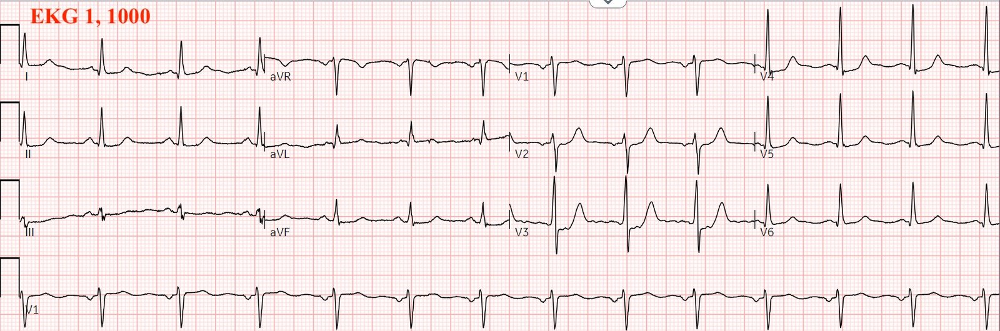
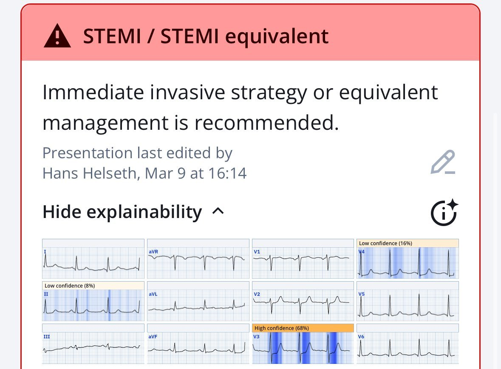
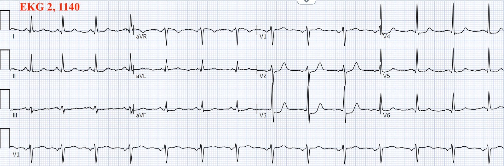
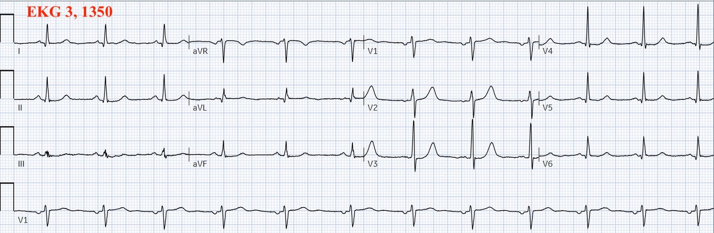
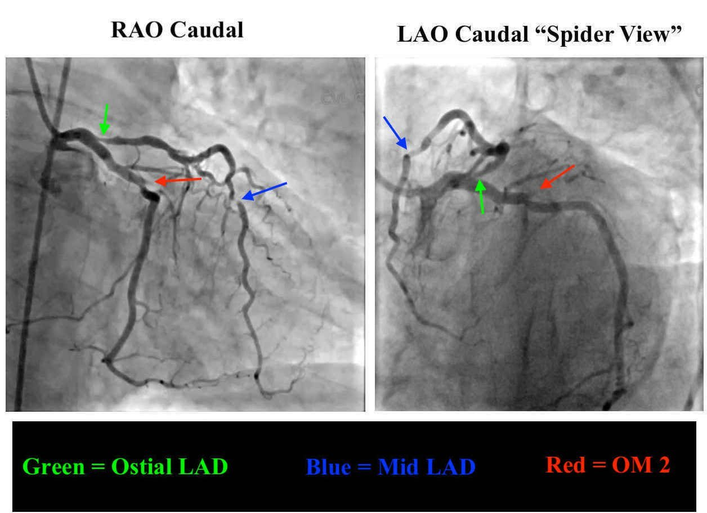
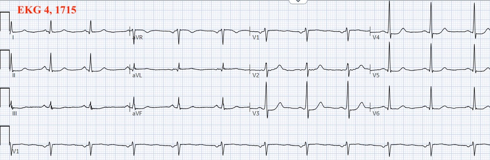
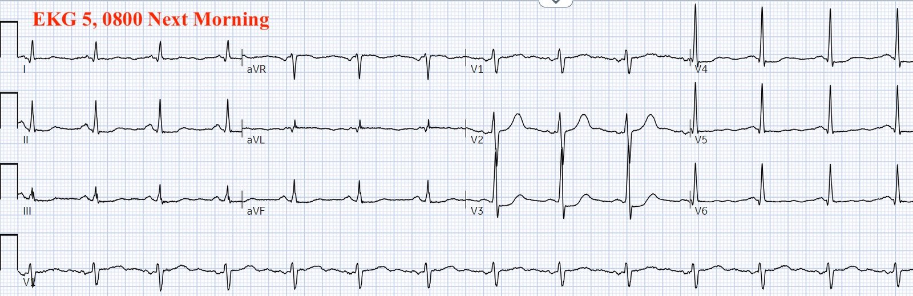
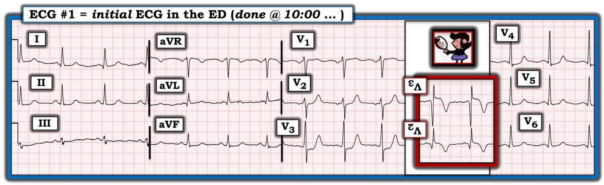
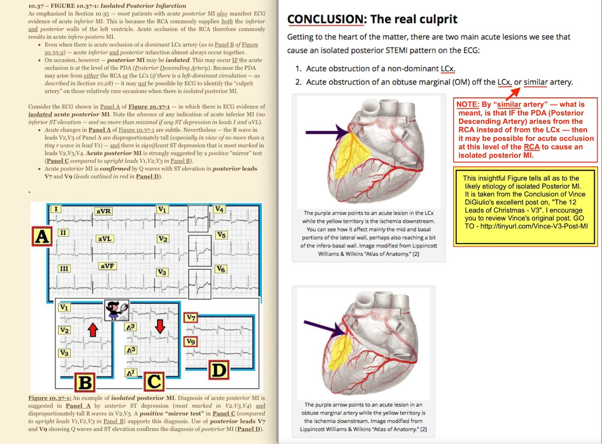

10/03/2025 — ST chênh xuống ở “thành trước”: tổn thương nào là thủ phạm?
Bản dịch tiếng Việt của bài "“Anterior” ST Depression: Which Lesion is the Culprit?" – Dr. Smith’s ECG Blog. Giữ nguyên toàn bộ 11 hình ảnh của bản gốc.
Bài viết của Hans Helseth
Hans là kỹ thuật viên điện tâm đồ đang nộp hồ sơ vào trường y. Kỹ năng đọc điện tâm đồ ít liên quan đến trình độ học vấn của một người. Thực tế, phần lớn những gì được coi là đào tạo điện tâm đồ thật ra có thể làm hại kỹ năng đọc điện tâm đồ.
Một người đàn ông 62 tuổi có tăng lipid máu đến khoa cấp cứu của một bệnh viện vùng nông thôn vì đau ngực mức 3/10 kéo dài 7 giờ. Đây là điện tâm đồ lúc phân loại (triage) của ông:


Với ST chênh xuống tối đa ở V2-V4 và hết chênh ở V5-V6, đây là hình ảnh chẩn đoán OMI thành sau, như Meyers và cs. đã chứng minh (https://www.ahajournals.org/doi/10.1161/JAHA.121.022866)
_________
Smith: Mặc dù nhiều tác giả cho rằng sóng R cao là yếu tố thiết yếu để chẩn đoán OMI thành sau, đó là một nhận định sai: trong nghiên cứu nêu trên, chúng tôi đã chứng minh rằng sóng R không có giá trị gì. Sóng R lớn tương đương với sóng Q và chỉ cho thấy nhồi máu đã tiến triển, lan đến một vùng rộng. OMI thành sau CẤP không có sóng R lớn. (Chúng tôi cũng chứng minh rằng không nhất thiết phải có sóng T dương, và nhiều ca có sóng T âm hoặc hai pha). Cơn đau đã kéo dài 7 giờ, tương ứng với thời gian nhồi máu dài và sự xuất hiện của sóng “Q” (trong ca này là sóng R cao)
_________
Với ST chênh xuống ở các chuyển đạo dưới và có thể có ST thẳng đuỗn ở aVL, còn có gợi ý tổn thương thành bên cao, nghĩa là động mạch thủ phạm nhiều khả năng là động mạch mũ trái hoặc một trong các nhánh của nó.
Đây là kết quả đọc của QoH (Queen of Hearts):


Bác sĩ khoa cấp cứu mô tả sóng T ở V2 và V3 là “tối cấp”. Ghi chép của bác sĩ không cho thấy rõ ý của bà khi dùng từ này (bà có nhận ra điện tâm đồ này là chẩn đoán thiếu máu cục bộ xuyên thành hay không, và nếu có thì ở vùng nào) nhưng điều trị tái tưới máu cấp cứu đã không được tiến hành.
Lúc 1022, kết quả troponin I (khoảng tham chiếu <0.034 ng/mL) là 4.437 ng/mL. Đây là lần đo troponin duy nhất trong ca này. Bệnh nhân được chẩn đoán NSTEMI và được truyền heparin liên tục.
[Smith: troponin ban đầu cao như vậy xác nhận đây là OMI bán cấp và nên dự đoán sẽ có sóng Q (sóng R cao)].
Một điện tâm đồ khác được ghi sau gần hai giờ. Không rõ tình trạng đau của bệnh nhân lúc này:


Điện tâm đồ hầu như không thay đổi.
Lúc 1210, ca bệnh được trao đổi với một bác sĩ tim mạch tại cơ sở có khả năng làm PCI; bác sĩ này đồng ý nhận chuyển bệnh nhân, ghi nhận ST chênh xuống ở các chuyển đạo trước là “phù hợp với thiếu máu cục bộ” nhưng “không phải STEMI”. Bệnh nhân đến khoa cấp cứu của cơ sở PCI, nơi ghi được điện tâm đồ này:


ST chênh xuống gần như đã hết hoàn toàn, gợi ý thành sau đã được tái tưới máu, mặc dù một lần nữa, không rõ tình trạng đau của bệnh nhân lúc này.
Lúc 1547, bệnh nhân được đưa đi chụp mạch vành:


Báo cáo thông tim của bác sĩ can thiệp mô tả:
- Hẹp 80% lỗ xuất phát (ostial) LAD (mũi tên xanh lá)
- Hẹp 95% LAD đoạn giữa (mũi tên xanh dương)
- Tắc 100% nhánh bờ tù thứ nhất (mũi tên đỏ)
Một số người có thể muốn gọi mạch bị tắc là nhánh bờ tù thứ hai, vì có thể thấy một nhánh nhỏ có cùng đường đi xuất phát ở đoạn gần hơn nó (xem Terminology and Semantics (Thuật ngữ và ngữ nghĩa) trong tài liệu hướng dẫn thông tim của Willy Frick).
Dựa vào các điện tâm đồ, tổn thương nào nhiều khả năng là thủ phạm nhất?
Trong ca này, bác sĩ can thiệp cho rằng tổn thương LAD đoạn giữa nhiều khả năng là thủ phạm. Các chỗ hẹp LAD đoạn gần và đoạn giữa được đặt stent, còn OM 2 được để nguyên. Ghi chép không cho thấy rõ tổn thương OM có được nhận định là tắc hoàn toàn mạn tính (CTO) hay không, nhưng nó không được can thiệp.
Một điện tâm đồ được ghi sau thông tim:


ST chênh xuống đã nặng hơn. Dòng chảy qua tổn thương nhiều khả năng là thủ phạm thực sự ở nhánh bờ tù thứ hai không được khôi phục, nên điện tâm đồ tiếp tục cho thấy thiếu máu cục bộ xuyên thành ở thành sau và thành bên cao.
Một điện tâm đồ khác được ghi vào ngày sau PCI:


ST chênh xuống còn nặng hơn nữa. Dòng chảy qua tổn thương vẫn chưa được khôi phục.
Siêu âm tim làm vào ngày sau PCI cho thấy EF 51% và giảm động ở các phân đoạn giữa thành sau, giữa thành bên và đáy thành bên. Phân bố rối loạn vận động thành như vậy phù hợp với thủ phạm ở nhánh bờ tù hơn là ở LAD đoạn giữa. Nếu đo thêm troponin, nhiều khả năng troponin sẽ tiếp tục tăng vì động mạch của bệnh nhân vẫn bị tắc.
Bệnh nhân được xuất viện vào ngày sau PCI. Không có thông tin theo dõi.
Hiện vẫn có quan niệm phổ biến rằng ST chênh xuống khu trú ở một vùng nhất định trên điện tâm đồ là dấu hiệu thiếu máu cục bộ dưới nội tâm mạc của vùng đó. Trong ca này, có thể các bác sĩ đã diễn giải ST chênh xuống ở các chuyển đạo trước là thiếu máu cục bộ dưới nội tâm mạc thành trước, và chỗ hẹp LAD đoạn giữa là thủ phạm gây ra thiếu máu cục bộ đó.
Thiếu máu cục bộ dưới nội tâm mạc không định khu. Nó biểu hiện bằng một vectơ ST chênh lên hướng về chuyển đạo aVR, gây ST chênh xuống tối đa ở các chuyển đạo vùng mỏm (II, V5-V6). Xem điều này được minh họa rất nhiều lần trên blog này. ST chênh xuống khu trú, như trong ca này, là dấu hiệu của thiếu máu cục bộ xuyên thành ở vùng đối diện. ST chênh xuống ở thành trước = ST chênh lên ở thành sau.
Đây nhiều khả năng là một ca PCI nhầm mạch. Điều này phổ biến đến bất ngờ. Heitner và cs. nhận thấy ở 14% bệnh nhân NSTEMI, một bác sĩ tim mạch can thiệp được làm mù khi đọc phim chụp mạch vành đã xác định một động mạch thủ phạm khác với kết quả của MRI tim (CMR) (https://www.ahajournals.org/doi/10.1161/CIRCINTERVENTIONS.118.007305). Đây là một ca cho thấy tầm quan trọng của các dấu hiệu OMI trên điện tâm đồ trong công việc của bác sĩ can thiệp.
Những điểm cần học:
- ST chênh xuống tối đa ở V1-V4 là OMI thành sau, không phải thiếu máu cục bộ thành trước, không phải thiếu máu cục bộ dưới nội tâm mạc
- Ca này lẽ ra phải được chụp mạch vành cấp cứu và PCI đúng mạch thủ phạm
- PCI nhầm mạch không hiếm gặp trong “NSTEMI”
- Troponin và điện tâm đồ theo dõi liên tiếp có thể là công cụ hữu ích để xác nhận PCI thành công.
Smith: đây là một bài có nhiều điện tâm đồ, so sánh và đối chiếu ST chênh xuống của OMI thành sau với sóng T de Winter:
De Winter’s T-waves are Not a Stable ECG condition. Upright T-waves in Posterior OMI are Distinct from de Winter’s waves. (Sóng T de Winter không phải là một tình trạng điện tâm đồ ổn định. Sóng T dương trong OMI thành sau khác biệt với sóng de Winter.)

===================================
BÌNH LUẬN CỦA TÔI, bởi KEN GRAUER, MD (10/3/2025):
===================================
Tôi đã viết như sau trong phần Bình luận của tôi ở bài đăng ngày 21 tháng Chín năm 2020 trên Dr. Smith’s ECG Blog:
“Tôi mong rằng những bác sĩ tim mạch vẫn tiếp tục tuân thủ chặt chẽ tiêu chuẩn STEMI dựa trên milimét sẽ đọc Dr. Smith’s ECG Blog. NẾU họ không đọc — họ sẽ tiếp tục bỏ sót những OMI rõ ràng đáng lẽ phải được thông tim kịp thời để được chăm sóc tối ưu.”
5 năm sau (nay đã là năm 2025) — vấn đề vẫn còn nguyên.
- Thành sau của thất trái không được nhìn trực tiếp bởi bất kỳ chuyển đạo nào trong 12 chuyển đạo của điện tâm đồ chuẩn. Do đó — sẽ không thấy ST chênh lên ở bất kỳ chuyển đạo nào trong 12 chuyển đạo chuẩn khi có OMI thành sau đơn độc.
- Các chuyển đạo phía sau (tức là các chuyển đạo V7, V8, V9) — đã được đề xuất như một cách tăng khả năng quan sát thành sau trên điện tâm đồ. Khi có nhồi máu cơ tim thành sau cấp — các chuyển đạo phía sau này đôi khi sẽ biểu hiện ST chênh lên mà không thấy trên 12 chuyển đạo chuẩn.
- Tuy vậy, như chúng tôi vẫn thường nhấn mạnh trên Dr. Smith’s ECG Blog — mức độ ST chênh lên mà bạn có thể thấy ở các chuyển đạo phía sau trong nhồi máu cơ tim thành sau cấp là hạn chế. Do đó, giá trị chẩn đoán của các chuyển đạo phía sau là hạn chế (Xem phần Bình luận của tôi trong bài đăng ngày 21 tháng Chín năm 2022).
- Phần lớn các trường hợp có OMI thành sau cấp — sẽ kèm theo nhồi máu cơ tim cấp thành dưới và/hoặc thành bên. Nhưng khi OMI chỉ khu trú ở thành sau — đơn giản là sẽ không có ST chênh lên ở bất kỳ chuyển đạo chuẩn nào.
Trong số các vấn đề của ca hôm nay có những điều sau:
- Thông tim bị trì hoãn gần 6 giờ — vì không điện tâm đồ nào đã ghi cho thấy ST chênh lên.
- Trong khi đó — tắc mạch vành cấp gây OMI thành sau đơn độc đã không được nhận ra bởi nhiều nhân viên y tế, kể cả bác sĩ tim mạch hội chẩn. Điều này xảy ra dù điện tâm đồ ban đầu đã có giá trị chẩn đoán — điện tâm đồ được ghi ngay lúc bệnh nhân mới đến khoa cấp cứu.
- Troponin ban đầu trả về tăng rõ rệt — nhưng vì không có ST chênh lên, nhồi máu được dán nhãn là NSTEMI. Thuật ngữ lỗi thời (vô dụng) này bỏ qua thực tế lâm sàng là nhiều trường hợp tắc mạch vành cấp không biểu hiện ST chênh lên.
- Và, vì khái niệm rằng tắc mạch vành cấp gây OMI thành sau đơn độc dễ dàng được nhận ra nhờ ST chênh xuống tối đa ở các chuyển đạo V2,V3,V4 — khi cuối cùng được thông tim, thủ thuật lại được thực hiện trên động mạch vành sai (trong khi việc nhận ra OMI thành sau đơn độc trên điện tâm đồ ban đầu đã ngay lập tức chỉ ra hệ LCx là động mạch “thủ phạm” — như được trình bày bên dưới ở Hình 3).
Như tôi đã than phiền vào năm 2020 — Thay vì mất thêm thời gian ghi một điện tâm đồ khác với các chuyển đạo phía sau (mà tốt nhất cũng chỉ cung cấp thông tin hạn chế) — tôi ủng hộ việc THÀNH THẠO sử dụng nghiệm pháp soi gương (Mirror Test) như một công cụ hỗ trợ nhận ra nhồi máu cơ tim thành sau cấp.
- Nghiệm pháp soi gương là một công cụ hỗ trợ trực quan đơn giản: Nó giúp bác sĩ nhận ra nhồi máu thành sau cấp. Nghiệm pháp dựa trên tiền đề rằng các chuyển đạo trước cung cấp hình ảnh soi gương của hoạt động điện ở thành sau. Chỉ cần lật ngược một điện tâm đồ 12 chuyển đạo chuẩn, rồi giơ lên trước ánh sáng — bạn có thể dễ dàng hình dung “hình ảnh soi gương” của các chuyển đạo V1, V2, V3 (Xem Hình 2 bên dưới).
- Trước đây tôi đã bàn về việc áp dụng nghiệm pháp soi gương rất nhiều lần (trong phần Bình luận của tôi ở cuối bài đăng ngày 13 tháng Chín năm 2020 và bài đăng ngày 16 tháng Hai năm 2019, cùng nhiều bài khác).
- Ở Hình 1 — tôi áp dụng nghiệm pháp soi gương cho các chuyển đạo V2,V3 trên điện tâm đồ ban đầu hôm nay. Như được trình bày ở ô chèn hình ảnh soi gương MÀU ĐỎ — Chẳng phải giờ đây đã rõ ràng là có tắc mạch vành cấp gây OMI thành sau đơn độc sao?



=====================================
Ở Hình 3 — Chúng ta thấy cơ sở lý luận cho việc định khu giải phẫu động mạch “thủ phạm” là LCx không ưu thế hoặc một nhánh bờ tù của LCx — khi có OMI thành sau đơn độc.

